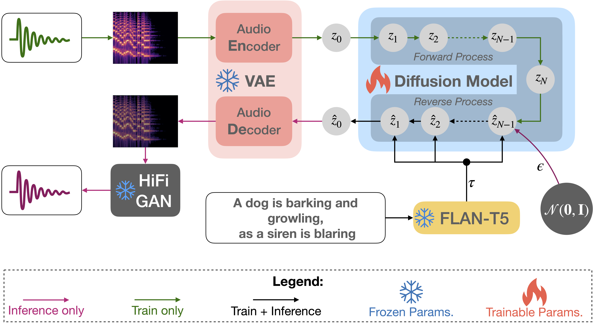

Text-to-Audio Generation using Instruction Tuned LLM and Latent Diffusion Model
Deepanway Ghosal1, Navonil Majumder1, Ambuj Mehrish1, Soujanya Poria1
1DeCLaRe Lab, Singapore University of Technology and Design, Singapore
Abstract
The immense scale of the recent large language models (LLM) allows many interesting properties, such as, instruction and chain-of-thought-based fine-tuning, that has significantly improved zero- and few-shot performance in many natural language processing (NLP) tasks. Inspired by such successes, we adopt such an instruction-tuned LLM FLAN-T5 as the text encoder for text-to-audio (TTA) generation—a task where the goal is to generate an audio from its textual description. The prior works on TTA either pre-trained a joint text-audio encoder or used a non-instruction-tuned model, such as, T5. Consequently, our latent diffusion model (LDM)-based approach (TANGO) outperforms the state-of-the-art AudioLDM on most metrics and stays comparable on the rest on AudioCaps test set, despite training the LDM on a 63 times smaller dataset and keeping the text encoder frozen. This improvement might also be attributed to the adoption of audio pressure level-based sound mixing for training set augmentation, whereas the prior methods take a random mix.
Note

Figure 1: TANGO, as depicted in this figure, has three major components: i) textual-prompt encoder, ii) latent diffusion model (LDM), and iii) mel-spectogram/audio VAE. The textual-prompt encoder (FLAN-T5) encodes the input description of the audio. Subsequently, the textual representation is used to construct a latent representation of the audio or audio prior from standard Gaussian noise, using reverse diffusion. Thereafter the decoder of the mel-spectogram VAE constructs a mel-spectogram from the latent audio representation. This mel-spectogram is fed to a vocoder to generate the final audio.
Some Examples:
| A man is speaking in a huge room. | A man is speaking in a small room. | A man is speaking in a studio. |
| A racing car is passing by and disappear. | Describe the sound of the battlefiled. | Describe the sound of the factory. |
| Describe the sound of the ocean. | Nature environmental noise with various bird vocalization, high fidelity, children playing far away and light wind. | Loud bus roaring and voices. |
| A cup is filled from a faucet. | A door shutting and a female speaking. | A helicopter is in flight. |
| A machine is making clicking sound as people talk in the background. | A missile launching followed by an explosion and metal screeching as a motor hums in the background. | A person snoring. |
| A toilet is flushed. | A woman and a baby are having a conversation. | Applause from a crowd with distant clicking and a man speaking over a loudspeaker. |
| Ducks quack and water splashes with some animal screeching in the background. | Emergency sirens wailing. | Female speech, a toilet flushing and then more speech. |
| Food sizzling with some knocking and banging followed by a woman speaking. | Motor vehicles are driving with loud engines and a person whistles. | Water trickling with man speaking. |
| Whistling with birds chirping. | ||
Multiconcept and Temporal Order Control:
| Text Description
red-prompt audios are from [demo]
|
AudioLDM | TANGO |
|---|---|---|
| Gentle water stream, birds chirping and sudden gun shot | ||
| dogs are barking and gunshot in the background | ||
| Wooden table tapping sound while water pouring | ||
| two gunshots followed by birds flying away while chirping | ||
| Someone urinating | ||
| elephant noise | ||
| Someone having loose motion at the toilet | ||
| dogs are fighting | ||
| A dog barking and a cat mewing and a racing car passes by | ||
| A dog barking and a man talking and a racing car passes by | ||
| A dog barking | ||
| Motor vehicles are driving with loud engines and a person whistles | ||
| People cheering in a stadium while rolling thunder and lightning strikes | ||
| People cheering in a stadium | ||
| A man talking followed by a goat baaing then a metal gate sliding shut as ducks quack and wind blows into a microphone. | ||
| A man speaking followed by a faucet turning on and off while pouring water twice proceeded by water draining down a pipe | ||
| A bicycle peddling on dirt and gravel followed by a man speaking then laughing | ||
| A man speaks followed by a popping noise and laughter | ||
| Quiet speech and then and airplane flying away |
Limitations
TANGO is trained on the small AudioCaps dataset so it may not generate good audio samples related to concepts that it has not seen in training (e.g. singing). For the same reason, TANGO is not always able to finely control its generations over textual control prompts. For example, the generations from TANGO for prompts 'Chopping tomatoes on a wooden table' and 'Chopping potatoes on a metal table' are very similar. 'Chopping vegetables on a table' also produces similar audio samples. Training text-to-audio generation models on larger datasets is thus required for the model to learn the composition of textual concepts and varied text-audio mappings. We are training another verison of TANGO on larger datasets to enhance its generalization, compositional and controllable generation ability.
Other comments
1. We share our code on github, which aims to open source the audio generation model training and evaluation for easier comparison.
2. We have released our model checkpoints for reproducibility.
Acknowledgement
This website is created based on https://github.com/AudioLDM/AudioLDM.github.io